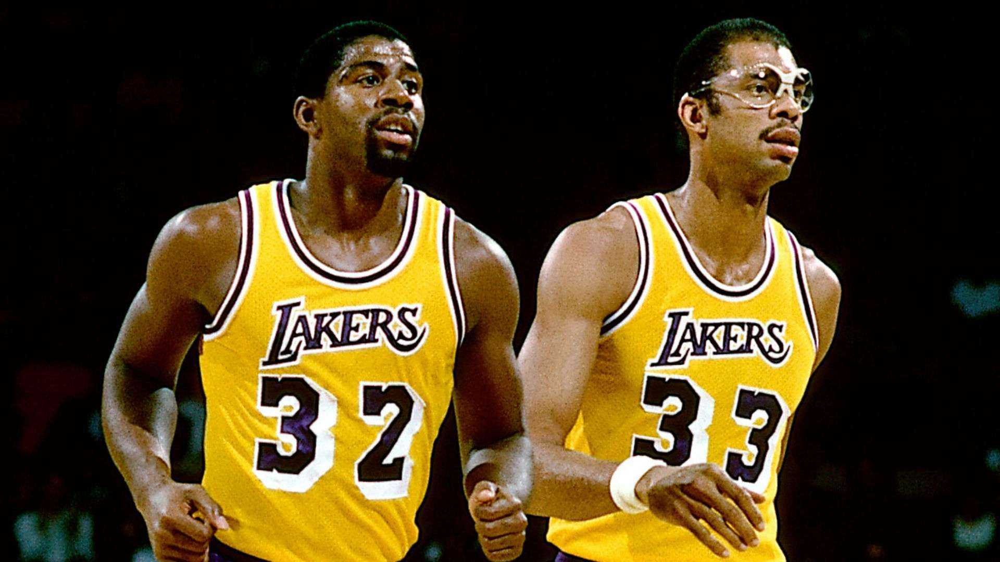
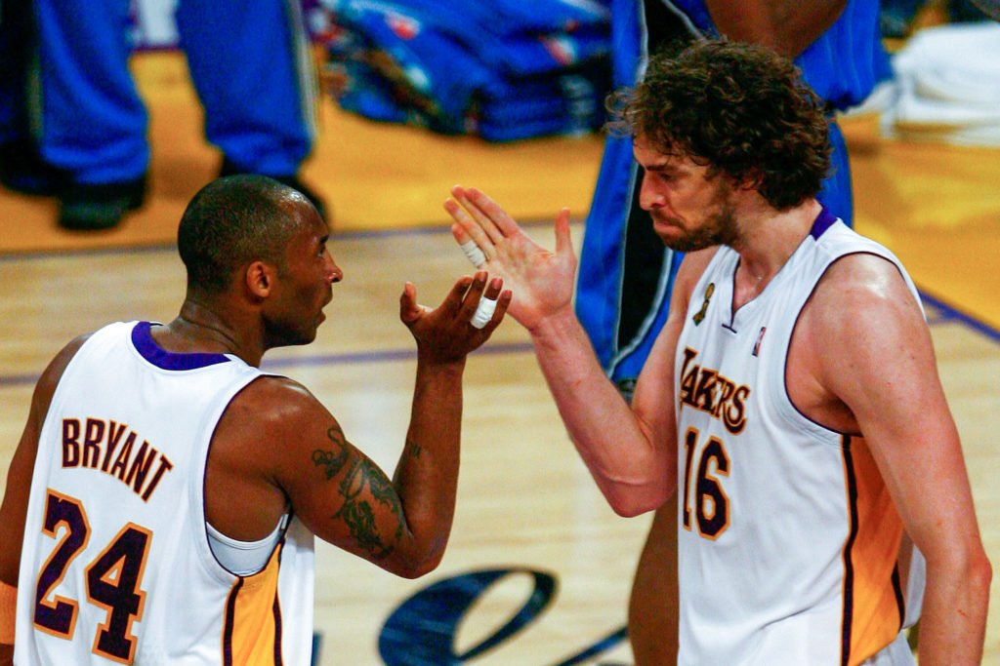

O Los Angeles Lakers nasceu como o Minneapolis Lakers em 1947. O nome Lakers vem de sua sede de origem, já que Minneapolis é conhecida como “a cidade dos lagos”, com mais de 10 mil — lake significa lago.
Na sua antiga sede, no estado de Minnesota, os Lakers foram campeões da NBA 5 vezes em seis anos, entre 1949 e 1954. A equipe se mudou para Los Angeles em 1960 e manteve sua trajetória de vitórias, levando mais 12 campeonatos.
Com 17 conquistas ao todo, os Lakers igualaram o recorde do Boston Celtics e se tornaram o time com mais títulos da NBA. Além disso, é de longe a franquia com mais aparições na final da NBA, com 32 participações — são 15 vice-campeonatos.
Então vamos ver os títulos mais importantes desta franquia!
1 - 1948-49
Na temporada 1948-49, o Lakers fez sua estreia na BAA, liga que se transformou na NBA no ano seguinte. A franquia, na época, se encontrava em Minneapolis.
Foram 44 vitórias na temporada regular e, nos playoffs, a equipe varreu seus adversários nos primeiros rounds. A final foi contra o Washington Capitols e o Lakers venceu a série por 4 a 2, vencendo seu primeiro título.
2 - 1949-50
O Lakers logo emendou seu segundo título na temporada seguinte. Na primeira temporada da liga como NBA, a franquia venceu 51 partidas na fase classificatória.
Os playoffs foram mais complicados: foram três rounds antes de chegar na grande final, porém, sem nenhuma derrota nelas. A decisão dessa vez foi contra o Syracuse Nationals e o Lakers, novamente, venceu por 4 a 2.
3 - 1951-52
Depois de perder nas finais de divisão em 1951, o Lakers conseguiu se recuperar e venceu mais um título na temporada seguinte. A franquia venceu 40 jogos na fase classificatória.
Nos playoffs, bateu o Indianapolis Olympians e Rochester Royals para chegar nas finais. A decisão foi em uma série eletrizante contra o New York Knicks, decidida em sete partidas.
4 - 1952-53
A temporada 1952-53 terminou novamente com o Lakers campeão. A franquia melhorou seu desempenho na fase classificatória e venceu 48 jogos, perdendo apenas 22.
Nos playoffs, teve dificuldades na final de divisão, contra o Fort Wayne Pistons. A série foi 3 a 2 e o Lakers acabou indo para final, onde ocorreu a revanche contra o Knicks. Dessa vez, a decisão acabou em cinco jogos, com o Lakers vencendo por 4 a 1.
5 - 1953-54
O último título do Lakers em Minneapolis veio na temporada 1953-54. Depois, eles só seriam campeões 18 anos depois, já em Los Angeles. Além disso, essa foi a última conquista de George Mikan, protagonista de todos os títulos da franquia até então.
Nessa temporada, o Lakers venceu 46 jogos e perdeu 26 na fase classificatória. Nos playoffs, não precisou jogar a primeira fase por conta da boa campanha. Eles ganharam do Rochester Royals na Final de Divisão e do Syracuse Nationals na grande decisão.
6 - 1971-72
O primeiro título do Lakers em Los Angeles veio em 1972. A franquia perdeu as oito finais anteriores que disputou, grande parte delas para o Boston Celtics. Estava na hora de voltar ao caminho das conquistas.
Na temporada 1971-72, eles tiveram a melhor campanha de sua história, vencendo 69 jogos na temporada regular. Nos playoffs, passaram pelo Bulls e Bucks nos dois primeiros rounds. Na final, bateram o Knicks por 4 a 1. A longa seca sem títulos estava encerrada e Jerry West conquistou seu primeiro e único anel.
7 - 1979-80
A temporada 1979-80 foi muito especial para o Los Angeles Lakers. Ela foi a primeira de Magic Johnson, um dos melhores armadores da história, na NBA. A equipe teve 60 vitórias na temporada regular, sendo essa a melhor campanha do Oeste.
Nos playoffs, passaram pelo Suns e Supersonics para chegar na grande final, contra o Philadelphia 76ers. O Lakers venceu por 4 a 2 a série e Magic Johnson, em sua temporada de novato, foi eleito MVP das Finais.
8 - 1981-82
Depois de cair logo no primeiro round em 1981, o Los Angeles Lakers veio com tudo para a temporada seguinte. A franquia manteve Magic Johnson e Kareem Abdul-Jabbar, principais nomes da conquista anterior.
O Lakers trocou de técnico no meio da temporada e Pat Riley assumiu o comando da equipe. Com a melhor campanha do Oeste, eles varreram Suns e Spurs nos primeiros rounds. A final foi novamente contra o 76ers, com a equipe vencendo por 4 a 2 de novo.
9 - 1984-85
O Los Angeles Lakers perdeu as finais de 1983 e 1984. A primeira para o 76ers e a segunda para o Celtics. Com isso, eles vieram mais determinados do que nunca a conquistar o título em 1985.
A temporada regular foi tranquila, com a franquia vencendo 62 jogos. Nos playoffs, nenhuma dificuldade de bater Suns, Trail Blazers e Nuggets para chegar nas Finais. A decisão foi contra o Celtics e o Lakers conseguiu se vingar da equipe, vencendo a série por 4 a 2.
10 - 1986-87
Em 1986, o Los Angeles Lakers acabou caindo para o Rockets nas Finais do Oeste. Na temporada seguinte, isso não aconteceu. A franquia teve um desempenho incrível na fase classificatória.
Eles chegaram nos playoffs embalados e eliminaram Nuggets, Warriors e Supersonics, perdendo apenas um jogo nessas três fases. A final foi contra o Celtics, maior rival da franquia. O Lakers foi campeão depois de vencer a série em seis jogos, com Magic Johnson vencendo seu terceiro e último MVP das Finais.
11 - 1987-88
O Lakers não havia conseguido vencer dois títulos seguidos desde sua mudança para Los Angeles. Na temporada 1987-88, eles deixaram esse "tabu" para trás.
A franquia manteve as principais peças do título anterior e chegou sem dificuldades aos playoffs. Neles, eliminaram Spurs, Jazz e Mavericks, esses últimos dois em séries de sete jogos. Na final, enfrentaram o temido Detroit Pistons. O Lakers venceu por 4 a 3, James Worthy foi MVP das Finais e Magic conquistou seu último título.

12 - 1999-00
Depois do título de 1988, o Los Angeles Lakers passou por algumas dificuldades. A franquia perdeu as finais que disputou em 1989 e 1991 e, depois, teve campanhas fracas, sem ir longe.
Em 1996, eles trouxeram Shaquille O'Neal. No entanto, a grande mudança veio com a contratação de Phil Jackson para ser técnico da equipe, na temporada 1999-00. Ele liderou o Lakers ao primeiro título em mais de dez anos. A franquia bateu o Indiana Pacers nas finais, por 4 a 2. Essa foi a primeira conquista da dupla Shaq e Kobe, uma das mais marcantes da história.
13 - 2000-01
Logo depois de vencer seu primeiro título, Shaquille O'Neal liderou o Lakers novamente a mais uma conquista. Na temporada 2000-01, a franquia teve onze vitórias a menos na fase classificatória que no ano anterior.
No entanto, na hora dos playoffs, eles cresceram. Varreram todos os adversários até as finais. A decisão foi contra o Philadelphia 76ers, de Allen Iverson. Depois de perder o primeiro jogo, o Lakers acabou com os adversários e fechou a série com um 4 a 1 tranquilo.
14 - 2001-02
A temporada 2001-02 trouxe o tricampeonato para o Los Angeles Lakers. A equipe venceu 58 jogos na temporada regular e teve a segunda melhor campanha de toda a Conferência Oeste.
O Lakers não teve dificuldades para passar pelo Trail Blazers e Spurs nas primeiras fases. A final de conferência, contra o Kings, foi eletrizante, mas eles passaram depois de sete jogos. Na grande decisão, contra o New Jersey Nets, a franquia venceu por 4 a 0. Shaq conquistou seu terceiro MVP das Finais seguido, sendo esse seu último título pela franquia.
15 - 2008-09
Depois de Shaq sair do Lakers, em 2004, a franquia passou por um período turbulento. Em 2005, ela nem aos playoffs foi. Nos dois anos seguintes, caiu na primeira rodada. No meio da temporada 2007-08, Pau Gasol chegou ao Lakers e, junto de Kobe, levou a franquia para as finais novamente.
Infelizmente, eles acabaram perdendo para o Boston Celtics. No entanto, no ano seguinte, o Lakers teve novamente uma grande campanha. Passou pelo Jazz, Rockets e Nuggets e chegou nas Finais. Enfrentando o Orlando Magic, de Dwight Howard, o Lakers venceu a série em cinco jogos e Kobe ganhou seu primeiro MVP das Finais.

16 - 2009-10
As principais peças do ano anterior do Los Angeles Lakers foram mantidas. A equipe ainda conseguiu contratar o ala Ron Artest na offseason, reforçando sua defesa.
Com isso, eles repetiram a dose de 2009. Passaram pelo Thunder, Jazz e Suns para chegar na grande final. A decisão foi contra o Boston Celtics, de quem tinham perdido dois anos antes. Em uma série de sete jogos, Kobe Bryant conseguiu sua vingança e garantiu seu quinto e último título da carreira.
17 - 2019-20
O Los Angeles Lakers trouxe LeBron James na offseason de 2018. Em seu primeiro ano, ele não conseguiu levar a equipe aos playoffs. Com isso, a franquia estabeleceu uma seca de seis anos sem ir até a pós-temporada. Na offseason seguinte, eles fizeram uma troca e adquiriram Anthony Davis.
Com isso, conseguiram voltar a um ótimo caminho. A temporada 2019-20 da NBA foi turbulenta, por conta da pandemia de coronavírus. No entanto, o Lakers conseguiu o 17º título de sua história, ao bater o Miami Heat nas finais da bolha por 4 a 2.